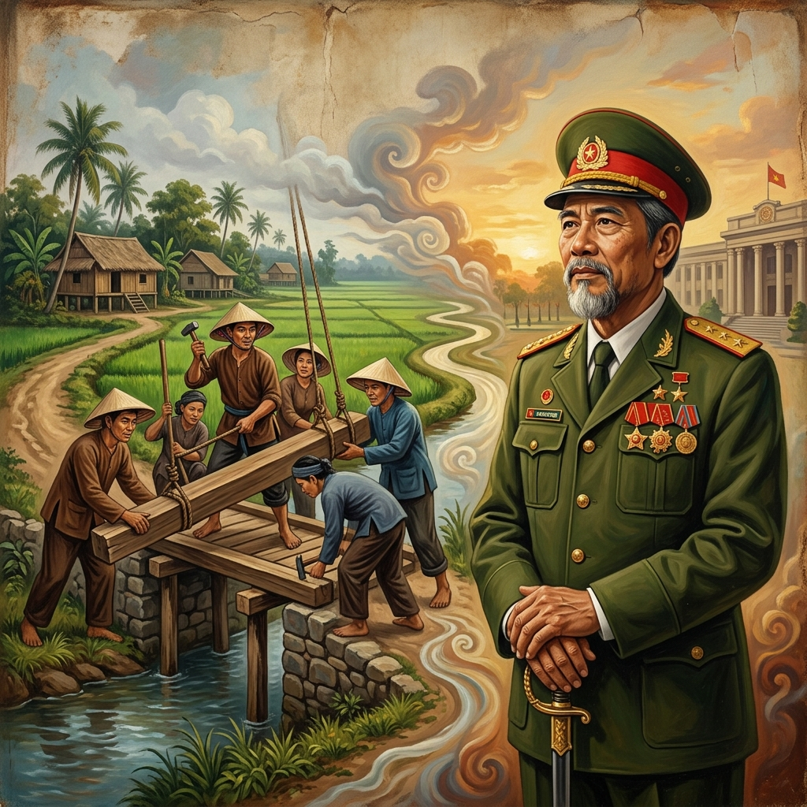

La Responsabilidad por el Bien NacionalResponsibility for the National GoodLa Responsabilità per il Bene Nazionale对国家利益的责任المسؤولية عن الخير الوطنيОтветственность за национальное благоVerantwortung für das nationale WohlLa responsabilité du bien national国家の利益に対する責任A Responsabilidade pelo Bem NacionalTrách nhiệm với lợi ích quốc gia
Quien en sus vidas pasadas cuidó con desinterés los asuntos de la nación y el bienestar del pueblo, renace investido de la autoridad y el mando de un gran líder.He who in his past lives selflessly cared for the affairs of the nation and the welfare of the people, is reborn invested with the authority and command of a great leader.Chi nelle sue vite passate si è preso cura disinteressatamente degli affari della nazione e del benessere del popolo, rinasce investito dell'autorità e del comando di un grande leader.前世无私关怀国家事务和人民福祉的人，重生时将获得伟大领袖的权威和指挥权。من اعتنى في حيواته السابقة بنكران ذات بشؤون الأمة ورفاهية الشعب، يولد من جديد مكللاً بسلطة وقيادة زعيم عظيم.Тот, кто в своих прошлых жизнях самоотверженно заботился о делах нации и благосостоянии народа, возрождается, наделенный властью и командованием великого лидера.Wer sich in seinen vergangenen Leben selbstlos um die Angelegenheiten der Nation und das Wohlergehen des Volkes gekümmert hat, wird mit der Autorität und dem Kommando eines großen Führers wiedergeboren.Celui qui, dans ses vies antérieures, s'est occupé avec désintéressement des affaires de la nation et du bien-être du peuple, renaît investi de l'autorité et du commandement d'un grand dirigeant.過去の人生で国家の事務と国民の福祉を無私无欲に気遣った者は、偉大な指導者の権威と指揮権を授かって生まれ変わります。Aquele que em suas vidas passadas cuidou desinteressadamente dos assuntos da nação e do bem-estar do povo, renasce investido da autoridade e do comando de um grande líder.Ai trong kiếp trước đã tận tụy lo toan việc nước việc dân một cách vô tư, sẽ tái sinh với uy quyền và sự dẫn dắt của một nhà lãnh đạo vĩ đại.
En el corazón de toda sociedad próspera la entrega al bien común sobre el interés personal. Atender los asuntos del Estado, el progreso de la tierra y las necesidades de los conciudadanos no es solo un deber civil, sino una de las formas más elevadas de sacrificio kármico. Mientras la mayoría busca solo el bienestar de su propio hogar, aquel que extiende sus manos para sostener las columnas de la nación, está construyendo un cimiento de honor que trascenderá los siglos.
La ley kármica establece una correspondencia directa entre nuestra entrega al colectivo y la autoridad que recibimos en el futuro. Quien dedicó su sudor, su ingenio y su tiempo a resolver los problemas de su pueblo, sin esperar honores inmediatos, está acumulando un 'crédito de mérito' ante el cosmos. La preocupación por el destino de la patria es el crisol donde se forja el alma de los verdaderos líderes.
Al renacer, estas almas regresan con un aura de mando y una sabiduría innata para la conducción de los hombres. El universo los coloca en posiciones de alta jerarquía porque ya han demostrado, en la humildad de sus vidas anteriores, que son capaces de anteponer la nación a su propio beneficio. La gloria y el mando que hoy disfrutan no son azar, sino la floración de la semilla de responsabilidad plantada en el pasado.
In the heart of every prosperous society lies a silent commitment: dedication to the common good over personal interest. Attending to state affairs, the progress of the land, and the needs of fellow citizens is not just a civil duty, but one of the highest forms of karmic sacrifice. While most seek only the well-being of their own home, he who extends his hands to support the columns of the nation is building a foundation of honor that will transcend centuries.
Karmic law establishes a direct correspondence between our dedication to the collective and the authority we receive in the future. He who dedicated his sweat, ingenuity, and time to solving his people's problems, without expecting immediate honors, is accumulating 'merit credit' before the cosmos. Concern for the country's destiny is the crucible where the souls of true leaders are forged.
Upon rebirth, these souls return with an aura of command and an innate wisdom for leading men. The universe places them in high-ranking positions because they have already demonstrated, in the humility of their past lives, that they are capable of putting the nation before their own benefit. The glory and command they enjoy today are not chance, but the flowering of the seed of responsibility planted in the past.
Nel cuore di ogni società prospera batte un impegno silenzioso: la dedizione al bene comune rispetto all'interesse personale. Occuparsi degli affari dello Stato, del progresso della terra e dei bisogni dei concittadini non è solo un dovere civile, ma una delle forme più elevate di sacrificio karmico. Mentre i più cercano solo il benessere della propria casa, chi tende le mani per sostenere le colonne della nazione sta costruendo una base di onore che trascenderà i secoli.
La legge karmica stabilisce una corrispondenza diretta tra la nostra dedizione alla collettività e l'autorità che riceveremo in futuro. Chi ha dedicato sudore, ingegno e tempo a risolvere i problemi del suo popolo, senza aspettarsi onori immediati, sta accumulando un 'credito di merito' davanti al cosmo. La preoccupazione per il destino della patria è il crogiolo in cui si forgiano le anime dei veri leader.
Rinascono, e queste anime tornano con un'aura di comando e una saggezza innata per la guida degli uomini. L'universo le pone in posizioni di alta gerarchia perché hanno già dimostrato, nell'umiltà delle loro vite precedenti, di essere capaci di anteporre la nazione al proprio beneficio. La gloria e il comando di cui godono oggi non sono casuali, ma la fioritura del seme della responsabilità piantato nel passato.
在每一个繁荣社会的中心，都跳动着一种无声的承诺：把公共利益置于个人利益之上的奉献。处理国家事务、土地的发展和同胞的需求，不仅是一项公民义务，也是业力牺牲的最高形式之一。当大多数人只寻求自己家庭的福祉时，那些伸出双手支持国家支柱的人，正在建立超越世纪的荣誉基础。
因果法则在我们的集体奉献与我们未来获得的权威之间建立了直接的对应关系。谁付出了汗水、才智和时间来解决人民的问题，而不指望立即获得荣誉，谁就在宇宙面前积累了‘功德信用’。对祖国命运的关怀是锻造真正领袖灵魂的熔炉。
重生后，这些灵魂带着指挥的光环和领导人类的天生智慧回归。宇宙将他们置于高位，因为他们在过去的谦卑生活中已经证明，他们能够把国家利益置于个人利益之上。他们今天享有的荣耀和指挥权并非偶然，而是过去种下的责任种子的开花结果。
في قلب كل مجتمع مزدهر ينبض التزام صامت: تفاني في الصالح العام على المصلحة الشخصية. إن الاهتمام بشؤون الدولة، وتقدم الأرض، واحتياجات المواطنين ليس مجرد واجب مدني، بل هو أحد أسمى أشكال التضحية الكارمية. بينما يسعى معظم الناس فقط لرفاهية منازلهم، فإن من يمد يديه لدعم أعمدة الأمة يبني أساسًا من الشرف سيتجاوز القرون.
يضع قانون الكارما علاقة مباشرة بين تفانينا للمصلحة الجماعية والسلطة التي نتلقاها في المستقبل. من كرس عرقه وبراعته ووقته لحل مشاكل شعبه، دون توقع تكريم فوري، يراكم 'رصيد ميزة' أمام الكون. الاهتمام بمصير الوطن هو البوتقة التي تصقل فيها أرواح القادة الحقيقيين.
عند الولادة من جديد، تعود هذه الأرواح بهالة من القيادة وحكمة فطرية لقيادة الرجال. يضعهم الكون في مناصب رفيعة لأنهم أثبتوا بالفعل، في تواضع حيواتهم السابقة، أنهم قادرون على تقديم مصلحة الأمة على منفعتهم الخاصة. المجد والقيادة اللذين يتمتعون بهما اليوم ليسا وليد الصدفة، بل هما تفتح بذرة المسؤولية التي زرعت في الماضي.
В сердце каждого процветающего общества бьется безмолвное обязательство — преданность общему благу выше личных интересов. Забота о государственных делах, процветании земли и нуждах сограждан — это не просто гражданский долг, но одна из высших форм кармического самопожертвования. Пока большинство стремится лишь к благополучию собственного дома, тот, кто протягивает руки, чтобы поддержать опоры нации, строит фундамент чести, который сохранится на века.
Кармический закон устанавливает прямое соответствие между нашей преданностью коллективу и авторитетом, который мы получим в будущем. Тот, кто отдавал свой пот, изобретательность и время решению проблем своего народа, не ожидая немедленных почестей, накапливает «заслуги» перед космосом. Забота о судьбе отечества — это горнило, в котором закаляются души истинных лидеров.
Возрождаясь, эти души возвращаются с аурой командования и врожденной мудростью для управления людьми. Вселенная ставит их на высокие иерархические посты, потому что они уже доказали в скромности своих прошлых жизней, что способны ставить нацию выше собственной выгоды. Слава и власть, которыми они пользуются сегодня, не случайны — это цветение семени ответственности, посаженного в прошлом.
Im Herzen jeder wohlhabenden Gesellschaft schlägt eine stille Verpflichtung: die Hingabe an das Gemeinwohl über das persönliche Interesse. Sich um die Angelegenheiten des Staates, den Fortschritt des Landes und die Bedürfnisse der Mitbürger zu kümmern, ist nicht nur eine Bürgerpflicht, sondern eine der höchsten Formen des karmischen Opfers. Während die meisten nur das Wohlergehen ihres eigenen Zuhauses suchen, baut derjenige, der seine Hände ausstreckt, um die Säulen der Nation zu stützen, ein Fundament der Ehre, das Jahrhunderte überdauern wird.
Das karmische Gesetz stellt eine direkte Entsprechung zwischen unserer Hingabe an das Kollektiv und der Autorität her, die wir in Zukunft erhalten. Wer seinen Schweiß, seinen Einfallsreichtum und seine Zeit der Lösung der Probleme seines Volkes gewidmet hat, ohne sofortige Ehrungen zu erwarten, sammelt ein 'Verdienstguthaben' vor dem Kosmos an. Die Sorge um das Schicksal der Heimat ist der Tiegel, in dem die Seelen wahrer Führer geschmiedet werden.
Bei der Wiedergeburt kehren diese Seelen mit einer Aura des Befehls und einer angeborenen Weisheit für die Führung von Menschen zurück. Das Universum platziert sie in hohen hierarchischen Positionen, weil sie bereits in der Demut ihrer früheren Leben bewiesen haben, dass sie in der Lage sind, die Nation über den eigenen Vorteil zu stellen. Der Ruhm und die Befehlsgewalt, die sie heute genießen, sind kein Zufall, sondern das Erblühen des in der Vergangenheit gepflanzten Samens der Verantwortung.
Au cœur de toute société prospère bat un engagement silencieux : le dévouement au bien commun plutôt qu'à l'intérêt personnel. S'occuper des affaires de l'État, du progrès du pays et des besoins des concitoyens n'est pas seulement un devoir civil, mais l'une des formes les plus élevées de sacrifice karmique. Alors que la plupart ne recherchent que le bien-être de leur propre foyer, celui qui tend les mains pour soutenir les colonnes de la nation construit un fondement d'honneur qui transcendera les siècles.
La loi karmique établit une correspondance directe entre notre dévouement au collectif et l'autorité que nous recevons dans le futur. Celui qui a consacré sa sueur, son ingéniosité et son temps à résoudre les problèmes de son peuple, sans attendre d'honneurs immédiats, accumule un 'crédit de mérite' devant le cosmos. Le souci du destin de la patrie est le creuset où se forgent les âmes des véritables leaders.
En renaissant, ces âmes reviennent avec une aura de commandement et une sagesse innée pour la conduite des hommes. L'univers les place dans des positions de haute hiérarchie parce qu'elles ont déjà démontré, dans l'humilité de leurs vies antérieures, qu'elles sont capables de faire passer la nation avant leur propre bénéfice. La gloire et le commandement dont ils jouissent aujourd'hui ne sont pas le fruit du hasard, mais l'épanouissement de la graine de responsabilité plantée dans le passé.
繁栄するすべての社会の中心には、個人的な利益よりも公共の利益を優先するという沈黙の献身が鼓動しています。国家の情勢、土地の進歩、そして同胞のニーズに配慮することは、単なる市民の義務ではなく、カルマ的な犠牲の最高形態の一つです。ほとんどの人が自分の家庭の幸福だけを求めているとき、国家の柱を支えるために手を差し伸べる者は、何世紀にもわたって受け継がれる名誉の基盤を築いているのです。
カルマの法則は、集団への献身と将来受け取る権威の間に直接的な対応関係を確立します。即時の栄誉を期待することなく、人々の問題を解決するために汗、創意工夫、時間を捧げた者は、宇宙の前で「徳の功績」を蓄積しています。祖国の運命に対する関心は、真の指導者の魂が鍛えられる試練の火なのです。
生まれ変わると、これらの魂は指揮のオーラと、人々を導くための天賦の知恵を携えて戻ってきます。宇宙は彼らを高い地位に就かせます。なぜなら、彼らは過去の謙虚な人生において、自分自身の利益よりも国家を優先させることができることをすでに証明しているからです。彼らが今日享受している栄光と指揮権は偶然ではなく、過去に植えられた責任の種が開花したものです。
No coração de toda sociedade próspera bate um compromisso silencioso: a dedicação ao bien comum sobre o interesse pessoal. Atender aos assuntos do Estado, ao progresso da terra e às necesidades dos concidadãos não é apenas um dever civil, mas uma das formas mais elevadas de sacrifício cármico. Enquanto a maioria busca apenas o bem-estar do seu próprio lar, aquele que estende as suas mãos para sustentar as colunas da nação está construyendo um alicerce de honra que transcenderá os séculos.
A lei cármica estabelece uma correspondência direta entre a nossa dedicação ao coletivo e a autoridade que recebemos no futuro. Quem dedicou o seu suor, o seu engenho e o seu tempo a resolver os problemas do seu povo, sem esperar honras imediatas, está acumulando um 'crédito de mérito' perante o cosmos. A preocupação com o destino da pátria é o cadinho onde se forjam as almas dos verdadeiros líderes.
Ao renascer, estas almas regressam con uma aura de comando e uma sabedoria inata para a condução dos homens. O universo coloca-as em posições de alta hierarquia porque já demonstraram, na humildade das suas huídas anteriores, que são capazes de antepor a nação ao seu próprio benefício. A glória e o mando que hoje desfrutam não são acaso, sino a floração da semente de responsabilidade plantada no passado.
Trong tâm khảm của mọi xã hội hưng thịnh luôn có một lời cam kết thầm lặng: sự tận hiến cho lợi ích chung trên cả lợi ích cá nhân. Lo toan việc nước, thúc đẩy sự tiến bộ của quê hương và đáp ứng nhu cầu của đồng bào không chỉ là bổn phận dân sự, mà còn là một trong những hình thức hy sinh cao cả nhất theo luật nhân quả. Trong khi nhiều người chỉ tìm kiếm sự an ổn cho gia đình riêng, thì những ai dang tay gánh vác rường cột quốc gia đang xây dựng một nền móng danh dự trường tồn qua nhiều thế kỷ.
Luật nhân quả thiết lập một mối liên hệ trực tiếp giữa sự tận tụy của chúng ta đối với tập thể và uy quyền mà chúng ta nhận được trong tương lai. Người đã dành mồ hôi, trí tuệ và thời gian để giải quyết những khó khăn của nhân dân mà không màng đến danh lợi tức thời, chính là đang tích lũy 'tín chỉ công đức' trước vũ trụ. Sự trăn trở về vận mệnh tổ quốc chính là lò luyện để đúc kết nên linh hồn của những nhà lãnh đạo thực thụ.
Khi tái sinh, những linh hồn này trở lại với hào quang của sự dẫn dắt và trí tuệ thiên bẩm trong việc điều hành con người. Vũ trụ đặt họ vào những vị trí cao vì họ đã chứng minh được trong cuộc đời khiêm nhường trước đó rằng họ có khả năng đặt quốc gia lên trên lợi ích bản thân. Vinh quang và uy quyền họ có hôm nay không phải là ngẫu nhiên, mà là sự nở hoa của hạt giống trách nhiệm đã gieo từ quá khứ.
El Constructor de Puentes
The Bridge Builder
Il Costruttore di Ponti
筑桥者
باني الجسور
Строитель мостов
Der Brückenbauer
Le bâtisseur de ponts
橋を架ける者
O Construtor de Pontes
Người Xây Cầu
En una lejana provincia devastada por las crecidas de los ríos, vivía un hombre llamado Vinh. Mientras otros se quejaban de la falta de caminos y la negligencia de los gobernantes, Vinh dedicaba sus tardes libres a recolectar piedras y madera. Con sus propias manos, comenzó a construir pequeños puentes y a reparar los tramos de camino que comunicaban las aldeas más pobres. No buscaba paga ni reconocimiento; su único motor era el dolor de ver a sus vecinos aislados.
Pasaron los años y la obra de Vinh transformó la región. Sin embargo, murió en la sencillez de su choza, conocido solo por los humildes campesinos a quienes había servido. Pero el cielo no olvida el sudor vertido por el bien público. Vinh renació en una familia de ilustre linaje, pero lo que lo distinguía no era su apellido, sino una visión estratégica y un sentido del deber que asombraba a sus maestros.
Muy joven, fue llamado a servir en el consejo supremo. Su capacidad para organizar defensas y unificar al pueblo en tiempos de crisis lo convirtió en el líder más respetado de su tiempo. Vinh no mandaba por la fuerza, sino por la autoridad natural de quien conoce el valor del servicio. La nación entera prosperó bajo su mando, como si las piedras de sus humildes puentes hubieran cimentado su trono de honor.
In a remote province devastated by flooding rivers, there lived a man named Vinh. While others complained about the lack of roads and the neglect of the rulers, Vinh spent his free afternoons collecting stones and wood. With his own hands, he began to build small bridges and repair stretches of road connecting the poorest villages. He sought neither pay nor recognition; his only driver was the pain of seeing his neighbors isolated.
Years passed and Vinh's work transformed the region. However, he died in the simplicity of his hut, known only to the humble peasants he had served. But heaven does not forget the sweat shed for the public good. Vinh was reborn into a family of illustrious lineage, but what distinguished him was not his surname, but a strategic vision and a sense of duty that astonished his teachers.
At a very young age, he was called to serve on the supreme council. His ability to organize defenses and unify the people in times of crisis made him the most respected leader of his time. Vinh did not rule by force, but by the natural authority of one who knows the value of service. The entire nation prospered under his command, as if the stones of his humble bridges had cemented his throne of honor.
In una remota provincia devastata dalle piene dei fiumi, viveva un uomo di nome Vinh. Mentre altri si lamentavano della mancanza di strade e della negligenza dei governanti, Vinh dedicava i suoi pomeriggi liberi a raccogliere pietre e legna. Con le sue stesse mani, iniziò a costruire piccoli ponti e a riparare tratti di strada che collegavano i villaggi più poveri. Non cercava paga né riconoscimento; il suo unico motore era il dolore nel vedere i suoi vicini isolati.
Passarono gli anni e l'opera di Vinh trasformò la regione. Eppure, morì nella semplicità della sua capanna, conosciuto solo dagli umili contadini che aveva servito. Ma il cielo non dimentica il sudore versato per il bene pubblico. Vinh rinacque in una famiglia di illustre lignaggio, ma ciò che lo distingueva non era il cognome, bensì una visione strategica e un senso del dovere che stupiva i suoi maestri.
Giovanissimo, fu chiamato a servire nel consiglio supremo. La sua capacità di organizzare difese e unificare il popolo in tempi di crisi lo rese il leader più rispettato del suo tempo. Vinh non comandava con la forza, ma con l'autorità naturale di chi conosce il valore del servizio. L'intera nazione prosperò sotto il suo comando, come se le pietre dei suoi umili ponti avessero cementato il suo trono d'onore.
在一个由于河流泛滥而遭受蹂躏的偏远省份，住着一个名叫 Vinh 的人。当别人抱怨道路缺乏和统治者的疏忽时，Vinh 利用空闲的下午收集石头和木材。他亲自动手，开始建造小桥，修理连接最贫困村庄的道路。他不寻求报酬，也不寻求认可；他唯一的动力是看到邻居们孤立无援的痛苦。
多年过去了，Vinh 的工作改变了该地区。然而，他在自己简陋的小屋里去世，只有他服务过的卑微农民才知道他。但上天不会忘记为公共利益流下的汗水。Vinh 重生在一个显赫的家族，但让他脱颖而出的不是他的姓氏，而是让他的老师感到惊讶的战略眼光和责任感。
年纪轻轻，他就被召集到最高议会任职。他在危机时期组织防御和统一人民的能力使他成为那个时代最受尊敬的领袖。Vinh 不是靠武力统治，而是靠一个懂得服务价值的人的自然权威。整个国家在他的指挥下繁荣昌盛，仿佛他那些简陋桥梁的石头加固了他的荣誉宝座。
في إقليم ناءٍ دمرته فيضانات الأنهار، عاش رجل يدعى فينه. وبينما كان الآخرون يشتكون من نقص الطرق وإهمال الحكام، كان فينه يقضي فترات ما بعد الظهر في جمع الحجارة والخشب. بيده، بدأ في بناء جسور صغيرة وإصلاح أجزاء من الطريق التي تربط أفقر القرى. لم يكن يسعى للحصول على أجر أو تقدير؛ كان دافعه الوحيد هو ألم رؤية جيرانه معزولين.
مرت السنين وحول عمل فينه المنطقة. ومع ذلك، مات في بساطة كوخه، ولم يعرفه سوى الفلاحين البسطاء الذين خدمهم. لكن السماء لا تنسى العرق الذي بذل من أجل الصالح العام. وُلد فينه من جديد في عائلة ذات نسب عريق، ولكن ما ميزه لم يكن لقبه، بل الرؤية الاستراتيجية والشعور بالواجب الذي أذهل معلميه.
في سن مبكرة جداً، استُدعي للخدمة في المجلس الأعلى. إن قدرته على تنظيم الدفاعات وتوحيد الشعب في أوقات الأزمات جعلت منه القائد الأكثر احتراماً في عصره. لم يكن فينه يحكم بالقوة، بل بالسلطة الطبيعية لمن يعرف قيمة الخدمة. ازدهرت الأمة بأكملها تحت قيادته، وكأن حجارة جسوره المتواضعة قد وطدت عرشه بالشرف.
В далекой провинции, опустошенной разливами рек, жил человек по имени Винь. Пока другие жаловались на отсутствие дорог и пренебрежение правителей, Винь посвящал свободные вечера сбору камней и древесины. Своими руками он начал строить небольшие мосты и ремонтировать участки дорог, соединявших беднейшие деревни. Он не искал ни платы, ни признания; его единственным двигателем была боль от вида изолированных соседей.
Прошли годы, и труд Виня преобразил регион. Однако он умер в простоте своей хижины, известный лишь скромным крестьянам, которым служил. Но небо не забывает пот, пролитый ради общественного блага. Винь возродился в семье знатного рода, но его отличала не фамилия, а стратегическое видение и чувство долга, которые поражали его учителей.
Совсем молодым его призвали на службу в высший совет. Его способность организовывать оборону и объединять народ во времена кризиса сделала его самым уважаемым лидером своего времени. Винь правил не силой, а естественным авторитетом того, кто знает ценность служения. Вся нация процветала под его командованием, как если бы камни его скромных мостов заложили фундамент его трона чести.
In einer entlegenen Provinz, die von Flussüberschwemmungen heimgesucht wurde, lebte ein Mann namens Vinh. Während andere sich über den Mangel an Straßen und die Nachlässigkeit der Herrscher beschwerten, widmete Vinh seine freien Nachmittage dem Sammeln von Steinen und Holz. Mit eigenen Händen begann er, kleine Brücken zu bauen und Straßenabschnitte zu reparieren, die die ärmsten Dörfer miteinander verbanden. Er suchte weder Bezahlung noch Anerkennung; sein einziger Antrieb war der Schmerz, seine Nachbarn isoliert zu sehen.
Jahre vergingen und Vinhs Arbeit veränderte die Region. Dennoch starb er in der Einfachheit seiner Hütte, nur den einfachen Bauern bekannt, denen er gedient hatte. Doch der Himmel vergisst nicht den Schweiß, der für das Gemeinwohl vergossen wurde. Vinh wurde in eine Familie von illustrer Abstammung wiedergeboren, aber was ihn auszeichnete, war nicht sein Nachname, sondern eine strategische Vision und ein Pflichtbewusstsein, das seine Lehrer in Erstaunen versetzte.
In sehr jungem Alter wurde er in den Obersten Rat berufen. Seine Fähigkeit, Verteidigungen zu organisieren und das Volk in Krisenzeiten zu einen, machte ihn zum angesehensten Führer seiner Zeit. Vinh herrschte nicht mit Gewalt, sondern durch die natürliche Autorität eines Menschen, der den Wert des Dienens kennt. Die ganze Nation blühte unter seinem Kommando auf, als hätten die Steine seiner bescheidenen Brücken seinen Ehrenthron gefestigt.
Dans une province reculée ravagée par les crues des rivières, vivait un homme nommé Vinh. Alors que d'autres se plaignaient du manque de routes et de la négligence des dirigeants, Vinh consacrait ses après-midi libres à ramasser des pierres et du bois. De ses propres mains, il commença à construire de petits ponts et à réparer des tronçons de route reliant les villages les plus pauvres. Il ne cherchait ni salaire ni reconnaissance ; son seul moteur était la douleur de voir ses voisins isolés.
Les années passèrent et l'œuvre de Vinh transforma la région. Cependant, il mourut dans la simplicité de sa cabane, connu seulement des humbles paysans qu'il avait servis. Mais le ciel n'oublie pas la sueur versée pour le bien public. Vinh renaquit dans une famille d'illustre lignée, mais ce qui le distinguait n'était pas son nom, mais une vision stratégique et un sens du devoir qui étonnaient ses maîtres.
Gravement jeune, il fut appelé à siéger au conseil suprême. Sa capacité à organiser les défenses et à unifier le peuple en temps de crise a fait de lui le dirigeant le plus respecté de son temps. Vinh ne commandait pas par la force, mais par l'autorité naturelle de celui qui connaît la valeur du service. La nation entière prospéra sous son commandement, comme si les pierres de ses humbles ponts avaient cimenté son trône d'honneur.
川の氾濫によって荒廃した辺境の州に、ヴィンという男が住んでいました。他の人々が道路の欠如や統治者の怠慢を嘆いている間、ヴィンは自由な午後を石や木材の収集に費やしました。彼は自らの手で小さな橋を架け、最も貧しい村々を結ぶ道路を修理し始めました。彼は報酬も認められることも求めませんでした。彼の唯一の原動力は、隣人たちが孤立しているのを見る痛みでした。
年月が流れ、ヴィンの仕事はその地域を変貌させました。しかし、彼は自分が仕えた謙虚な農民たちだけに知られながら、質素な小屋で亡くなりました。しかし、天は公共の利益のために流された汗を忘れません。ヴィンは由緒ある家柄に生まれ変わりましたが、彼を際立たせたのは名字ではなく、教師たちを驚かせた戦略的ビジョンと義務感でした。
非常に若くして、彼は最高評議会に召集されました。防衛を組織し、危機の際に人々を団結させる彼の能力は、彼をその時代で最も尊敬される指導者にしました。ヴィンは力で支配したのではなく、奉仕の価値を知る者の自然な権威によって支配しました。あたかも彼の謙虚な橋の石が彼の名誉の玉座を固めたかのように、国家全体が彼の指揮の下で繁栄しました。
Numa província remota devastada pelas cheias dos rios, vivia um homem chamado Vinh. Enquanto outros se queixavam da falta de caminhos e da negligência dos governantes, Vinh dedicava as suas tardes livres a recolher pedras e madeira. Com as suas próprias mãos, começou a construir pequenas pontes e a reparar os trechos de caminho que comunicavam as aldeias mais pobres. Não buscava paga nem reconhecimento; o seu único motor era a dor de ver os seus vizinhos isolados.
Passaram os anos e a obra de Vinh transformou la región. No entanto, morreu na simplicidade da sua choupana, conhecido apenas pelos humildes camponeses a quem tinha servido. Mas o céu não esquece o suor vertido pelo bien público. Vinh renasceu numa família de ilustre linaje, mas o que o distinguia não era o apelido, mas uma visão estratégica e um sentido do dever que assombrava os seus mestres.
Muito jovem, foi chamado a servir no conselho supremo. A sua capacidade para organizar defensas e unificar o povo em tempos de crise tornou-o o líder mais respeitado do seu tempo. Vinh não mandava pela força, sino pela autoridade natural de quem conhece o valor del serviço. A nação inteira prosperou sob o seu comando, como se as pedras das suas humildes pontes tivessem cimentado o seu trono de honra.
Tại một tỉnh xa xôi thường xuyên bị lũ lụt tàn phá, có một người đàn ông tên là Vinh. Trong khi những người khác than phiền về tình trạng thiếu đường sá và sự thờ ơ của quan lại, Vinh dành những buổi chiều rảnh rỗi để nhặt đá và gom gỗ. Bằng chính đôi tay mình, ông bắt đầu xây những cây cầu nhỏ và sửa sang những đoạn đường nối liền các bản làng nghèo nhất. Ông không tìm kiếm thù lao hay danh tiếng; động lực duy nhất của ông là nỗi đau khi thấy những người hàng xóm bị cô lập.
Năm tháng trôi qua, công việc của Vinh đã thay đổi cả vùng. Tuy nhiên, ông qua đời trong sự giản dị của túp lều mình, chỉ được biết đến bởi những người nông dân nghèo khổ mà ông đã phục vụ. Nhưng trời xanh không quên những giọt mồ hôi rơi vì lợi ích chung. Vinh tái sinh trong một gia đình thế gia vọng tộc, nhưng điều làm ông nổi bật không phải là gia thế, mà là tầm nhìn chiến lược và tinh thần trách nhiệm khiến các bậc thầy phải kinh ngạc.
Khi còn rất trẻ, ông đã được triệu tập để phục vụ trong hội đồng tối cao. Khả năng tổ chức phòng thủ và đoàn kết nhân dân trong thời kỳ khủng hoảng đã biến ông trở thành nhà lãnh đạo được kính trọng nhất thời bấy giờ. Vinh không điều hành bằng vũ lực, mà bằng uy tín tự nhiên của một người thấu hiểu giá trị của sự phụng sự. Cả quốc gia hưng thịnh dưới sự dẫn dắt của ông, như thể những viên đá từ những cây cầu khiêm nhường năm xưa đã xây nên ngai vàng danh dự của ông ngày nay.

La Inspiración Original
The Original Inspiration
L'ispirazione originale
最初的灵感
الإلهام الأصلي
Оригинальное вдохновение
Die ursprüngliche Inspiration
L'inspiration originale
オリジナルのインスピレーション
A inspiração original
Nguồn cảm hứng ban đầu
La historia que hemos relatado en este capítulo está inspirada por el pasaje de la escena original de los murales «Tranh Nhân Quả» (Ilustraciones del Karma) del Templo Linh Ung en Da Nang, capturado en la imagen.
The story we have told in this chapter is inspired by the passage from the original scene of the “Tranh Nhân Quả” (Illustrations of Karma) murals of the Linh Ung Temple in Da Nang, captured in the image.
La storia che abbiamo raccontato in questo capitolo è ispirata al passaggio della scena originale dei murali “Tranh Nhân Quả” (Illustrazioni del Karma) del Tempio Linh Ung a Da Nang, catturati nell'immagine.
我们在本章中讲述的故事的灵感来自图像中捕获的岘港灵应寺“Tranh Nhân Quả”（业力插图）壁画的原始场景。
القصة التي رويناها في هذا الفصل مستوحاة من مقطع من المشهد الأصلي لجداريات "ترانه نهان كو" (الرسوم التوضيحية للكارما) لمعبد لينه أونغ في دا نانغ، الملتقطة في الصورة.
История, которую мы рассказали в этой главе, вдохновлена отрывком из оригинальной сцены фрески «Тран Нхан Ку» («Иллюстрации кармы») храма Линь Унг в Дананге, запечатленной на изображении.
Die Geschichte, die wir in diesem Kapitel erzählt haben, ist inspiriert von der Passage aus der Originalszene der Wandgemälde „Tranh Nhân Quả“ (Illustrationen von Karma) des Linh Ung-Tempels in Da Nang, die im Bild festgehalten ist.
L'histoire que nous avons racontée dans ce chapitre est inspirée du passage de la scène originale des peintures murales « Tranh Nhân Quả » (Illustrations du Karma) du temple Linh Ung à Da Nang, capturées dans l'image.
この章で私たちが語った物語は、ダナンのリンウン寺院の壁画「Tranh Nhân Quả」（カルマの図）の元のシーンの一節からインスピレーションを得て、画像に収められています。
A história que contamos neste capítulo é inspirada na passagem da cena original dos murais “Tranh Nhân Quả” (Ilustrações do Karma) do Templo Linh Ung em Da Nang, capturada na imagem.
Câu chuyện chúng tôi kể trong chương này được lấy cảm hứng từ đoạn trích từ cảnh gốc của bức tranh tường “Tranh Nhân Quả” ở chùa Linh Ứng ở Đà Nẵng, được ghi lại trong hình ảnh.

Como se puede apreciar en el pasaje extraído del mural, la causa y su efecto kármico están descritos originalmente en vietnamita y con una breve traducción al inglés. A continuación, te ofrecemos su traducción detallada en los distintos idiomas:
As can be seen in the passage taken from the mural, the cause and its karmic effect are originally described in Vietnamese and with a brief translation into English. Below, we offer you its detailed translation in the different languages:
🇻🇳 Tiếng Việt:
Nhân: Kiếp trước lo việc nước việc dân.
Quả: Sau này làm quan tướng uy quyền.
🇬🇧 English:
Cause: Being responsible for national affairs.
Effect: Brings rebirth as a high-ranking official.
Traducción Recreada:
Causa: Preocuparse con desinterés por los asuntos de la nación y el bienestar del pueblo.
Efecto: Trae el renacimiento como un alto mandatario u oficial de gran autoridad.
Recreated Translation:
Cause: Being responsible for national affairs.
Effect: Brings rebirth as a high-ranking official.
Traduzione ricreata:
Causa: Preoccuparsi disinteressatamente degli affari della nazione e del benessere del popolo.
Effetto: Porta alla rinascita come alto funzionario o ufficiale di grande autorità.
重新创建的翻译:
起因：无私关怀国家事务和人民福祉。
结果：重生为具有极高权威的高管或官员。
الترجمة المعاد صياغتها:
السبب: الاهتمام بشؤون الأمة ورفاهية الشعب بنكران ذات.
الأثر: يولد من جديد كمسؤول رفيع المستوى أو ضابط ذو سلطة كبيرة.
Воссозданный перевод:
Причина: Самоотверженная забота о делах нации и благосостоянии народа.
Следствие: Возрождение в качестве высокопоставленного чиновника или офицера, обладающего большой властью.
Neu erstellte Übersetzung:
Ursache: Selbstlose Sorge um die Angelegenheiten der Nation und das Wohlergehen des Volkes.
Wirkung: Bringt die Wiedergeburt als ranghoher Beamter oder Offizier mit großer Autorität.
Traduction recréée:
Cause : Se préoccuper avec désintéressement des affaires de la nation et du bien-être du peuple.
Effet : Entraîne une renaissance en tant que haut fonctionnaire ou officier de grande autorité.
再作成された翻訳:
原因：国家の事務と国民の福祉を无私无欲に気遣うこと。
影響：大きな権威を持つ高官や将校として生まれ変わる。
Tradução recriada:
Causa: Preocupar-se abnegadamente com os assuntos da nação e o bem-estar do povo.
Efeito: Traz o renascimento como um alto mandatario ou oficial de grande autoridade.